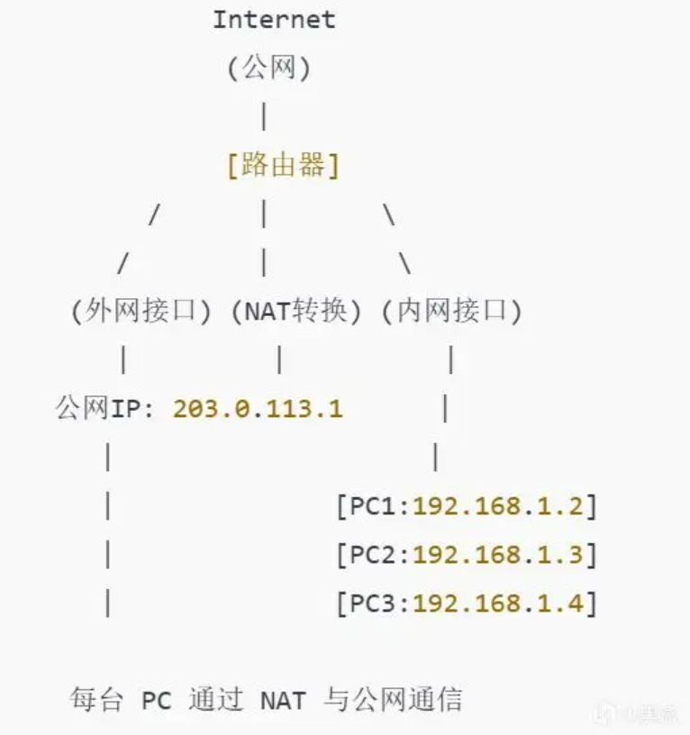
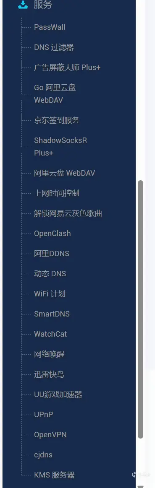

1. NAT协议的原理
作为一名“外门硬件爱好者”，我平时就喜欢捣鼓点儿奇奇怪怪的东西，虽说常常半途而废，但今天终于决定来聊一聊如何用 OpenWRT 让校园网“开挂”——解锁连接上限！
在我们深入讨论软路由和路由之前，先来聊聊NAT协议。NAT（网络地址转换）是一种通过路由器或防火墙等设备将内部私有IP地址与外部公有IP地址进行转换的技术。它的核心功能是让多个设备可以共享一个或少数几个公网IP访问互联网。举个例子，你家里有十台设备，但只用一个路由器IP连接外网，NAT就是这么“魔术”般的工作原理。通过NAT，普通的路由器能够让多台设备共用一个公网IP地址，但在校园网这种特殊环境下，有些普通路由器的NAT功能可能不太适用，连接上限成了瓶颈。于是我们就需要更强大、更灵活的解决方案——软路由！

2. 硬路由与软路由的区别
要解决这个问题，首先得弄明白硬路由和软路由的区别。硬路由通常是我们购买的那些“成品”路由器，比如华为、小米、TP-LINK这些品牌的设备。它们出厂时就已经安装好了定制的操作系统，并且只能依赖厂商的系统更新，想加点小插件来定制功能？几乎不可能。硬路由的优势是即插即用，功能简单且稳定，非常适合家庭和小型办公室的基础需求。
而软路由则是灵活多了。它其实是一台小主机，无论是X86架构还是ARM架构，只要有足够的硬件支持，都可以用来作为路由器。软路由的最大优势是系统可以根据自己的需求来定制——在硬件方面，配置更高的CPU和内存能让软路由更强大，且可以随时升级硬件。
3. 软路由的优势：OpenWRT插件大公开
软路由的一个超级亮点，就是它可以安装各种插件，拓展功能。例如，我们最爱的Clash，懂得朋友们应该知道这是什么吧（狗头保命）。这个插件能让连接到这个路由器的所有设备通过一个节点实现科学上网，简直是摆脱防火墙的好帮手！还有广告屏蔽大师plus+，彻底屏蔽烦人的广告，提升上网体验。不仅如此，软路由还支持搭建KMS服务器来激活Windows和Office，挂载网络硬盘实现文件共享，甚至可以用UU游戏加速器来提升像Steam Deck这种设备的网络加速，简直无所不能！

而且，OpenWRT本身是一个开源系统，大家可以在官网上找到各种版本的固件，甚至可以根据自己的需求去定制系统。说到定制，现在很多大佬已经做出了工具，让普通用户也能尝试自己定制软路由系统，虽然有点难度，但绝对值得挑战！你可以通过OpenWRT官网或ImmortalWrt官网来筛选适合自己设备的固件，看看自己的路由器是否支持刷OpenWRT。对于初学者，如果觉得刷机有点复杂，我推荐可以在咸鱼上购买已经刷好OpenWRT的CR660X系列路由器，价格大约在60元左右，性价比非常高！
4. 如何配置软路由来提升校园网体验
当你了解了软路由的优势，下一步就可以开始配置软路由来优化校园网的使用体验了。例如，你可以设置QoS（服务质量）来控制流量，保证视频会议、学习资料的下载不会被游戏或视频流占用过多带宽；或者用防火墙插件加强网络安全，避免一些不必要的恶意攻击。利用OpenWRT的强大功能，你可以根据自己的需求定制网络环境，真正做到“量体裁衣”。
5. 总结与拓展
总的来说，软路由比硬路由的灵活性要高很多，特别是在一些特殊需求下，软路由能够通过插件拓展出更多的功能，提供更好的网络体验。在校园网环境中，使用软路由不仅可以解锁连接上限，还能提升整体的网络安全性与效率。
下一步，你可能需要根据自己校园网的具体情况，选择合适的硬件平台（比如老旧的PC、树莓派或者老路由器）来搭建自己的软路由环境。对于有特殊网络需求的朋友来说，这无疑是一个性价比极高的方案。
补充
流量监测的主流方案有时间戳、MAC绑定、UA、IPID，以及DPI，也就是GFW同款深度数据包检测，都是有解决方案的，比如UA3F+RKP-IPID，前者通过本地SOCKS5节点修改出口数据包UA，后者修改数据包分片IPID，时间戳通过修改iptables劫持NDP流量到openwrt本地NDP服务器也可以解决，这些操作就能通过大部分主流的流控方案，少部分有钱的学校会上DPI，DPI对网关性能要求很高，但也不是没办法，可以用vps/家宽自建远程softether/socks5节点全局代理、混淆流量，总之没有绝对安全的系统
评论区